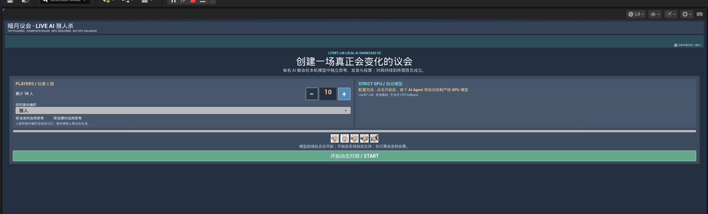
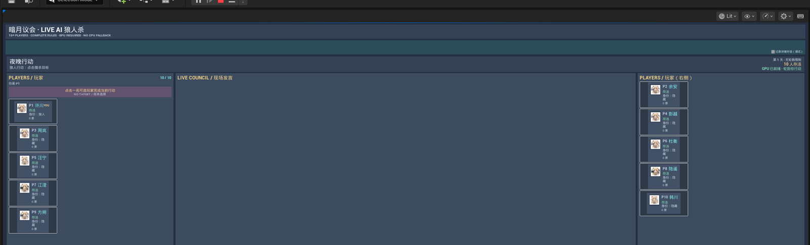

狼人杀实机 · 蓝图 · 独立记忆
从完整狼人杀 Demo 学多会话
先运行现成对局，看见 10 名玩家同时存在；再回到 GameCore，理解每个身份怎样持有独立 Agent、接收公开或私密记忆，并把异步结果送回正确玩家。
多 Agent 的真实模型
| 整个进程共享一份 | 每个 Agent 独立一份 |
|---|---|
| GPU 模型、运行时状态、串行推理队列、项目默认采样参数 | 显示名、System Prompt、工具声明、规范化记忆、当前请求与生命周期 |
凡是对象需要独立记忆，就应该使用 Agent，例如 NPC、队友、裁判、游戏身份、多个聊天标签页，以及狼人杀这类多角色模拟。
Run before reading
先用两张图确认完整 Demo 可以运行
如果还没有完成单对话链路，请先回到 逐帧快速入门；本页从已经能收到本地回答开始。
打开 L_WerewolfShowcase，点击 Play，并确认配置页显示 10 名玩家。
{kind=link}

点击 START，确认玩家名册、阶段和现场发言区同时出现。
{kind=link}

1. 先准备蓝图数据
创建 Agent 容器
增加名为 Conversations 的数组，类型为 Lite Rt Lm Agent Object Reference。如果经常按身份 ID 查找，再维护一个“角色/玩家 ID → Agent”的 Map。
定义身份记录
每个身份至少提供稳定 ID、显示名、System Prompt，以及可选的 Tool Declarations JSON。秘密身份信息放在对应身份自己的 Prompt 或选定记忆里，不要放进所有人共享的 Prompt。
2. 每个身份创建一个 Agent
- 循环身份/玩家记录。
- 创建
Lite Rt Lm Agent Config。 - 设置
Display Name、System Prompt和可选的Tool Declarations Json。 - 调用
Create Conversation (Advanced)。 - 把返回的 Agent 加入数组或 ID Map。
Get LiteRT-LM Runtime → Create Agent 创建的是同一种 Agent。新的蓝图建议使用 Create Conversation (Advanced) 场景工厂，只是因为搜索和理解更直接。
LiteRtLmAgents。新蓝图可使用等价的场景工厂。3. 创建后立即绑定事件，并保留结果身份
每个 Agent 创建后立即绑定：
On Completed：最终文本、工具调用、记忆快照、指标与错误字段。On Text Chunk：流式 UI。On Error：配置错误或请求未被接受。On State Changed：创建、加载、就绪、运行和结束状态。On Memory Changed：可选的保存或 UI 观察。
完成委托不会额外携带你的玩法身份 ID。可以为不同身份绑定专用处理器、给每个 Agent 配一个小型持有对象/组件，或者在 Ask 时建立“Request ID → 身份”的 Map。异步完成后不要依赖“循环最后一次的 Index”。
4. 一定要问到正确的 Agent
按稳定的玩法身份选择
把当前发言者/玩家 ID 解析为对应 Agent，检查引用有效且 Is Busy 为 false，再调用 Ask。保存返回的 Request ID，直到完成事件抵达。
5. 正确分发公开信息和私密信息
真实公开事件
对相关 Agent 数组调用 Append Memory Message to Conversations，写入事件本身，例如：
Role: user
Content: [游戏事件] 第 2 天发言阶段，3 号玩家公开声称自己是狼人。这个调用只改变记忆，不执行推理。数组中每个有效且不重复的 Agent 都会得到同一条规范化消息。
真实私密事件
只取得应该知道它的 Agent，并逐个调用 Append Memory Message。例如狼队友信息、预言家的查验结果、私密任务、只有某个 NPC 知道的事实。
6. 游戏决策使用低随机性的选项
投票、选工具或其他结构化决策，可以生成以下请求选项：
Make Precise Decision Ask Options：低随机性，不启用 Thinking。Make Reasoned Decision Ask Options：固定 Seed，启用 Thinking，适合结构化推理决策。
建议声明类似 vote_player 的工具，并要求整数玩家 ID。游戏代码负责执行和校验动作；模型不应直接修改对局状态。
如果回答未通过校验，在重试前调用 Reject Last Response。它会移除最后一条终止态 AI 回答，同时保留产生这次回答的输入，避免错误决定被继续强化到规范化记忆里。
狼人杀测试：玩家公开自爆狼人身份
这是很好的端到端上下文测试，因为下一轮投票是否合理非常容易观察。
- 开始一局，为每个 AI 玩家创建独立 Agent。
- 当真人说“我是狼人，我的狼队友是 4 号”时，把这句已经说出口的话视为真实公开游戏事件。
- 把该事件追加到所有存活玩家的对话记忆；不要写入玩家从未公开的引擎内部真相。
- 投票前导出每个相关 Agent 的记忆，确认精确事件确实存在。
- 对每个存活 AI Agent 使用决策/工具结构发起投票请求。
- 校验投票目标仍存活且具备资格，并记录 Request ID、Agent ID、目标与校验结果。
按顺序排查“AI 完全没看对话”
| 检查顺序 | 能够证明什么 |
|---|---|
| 1. Agent 身份 创建、Ask、完成时记录 Get Agent Id 和 Display Name。 | 你提问的就是你检查记忆的那个对象。 |
| 2. 生命周期 确认数组/Map 仍持有 Agent，没有被新的 Agent 替换。 | 对话没有被静默重建。 |
| 3. 规范化记忆 Ask 前立即调用 Export Memory Json。 | 模型输入中确实包含该游戏事件。 |
| 4. 请求身份 完成结果与 Ask 返回的 Request ID 对应。 | 旧队列结果没有被错误应用到当前回合。 |
| 5. 决策协议 检查 Tool Call 参数和校验结果。 | 解析或游戏校验没有丢弃模型真正给出的选择。 |
| 6. 诊断 临时启用 Detailed Diagnostics。 | 可以在磁盘上关联完整上下文与运行时结果。 |
安全结束或替换一局游戏
对数组调用 Close and Clear Conversations。整局或整场景替换时保持 Unbind Events Before Close 开启，避免旧请求取消后的回调进入新状态机。随后清理 Request ID Map 与玩法持有对象。